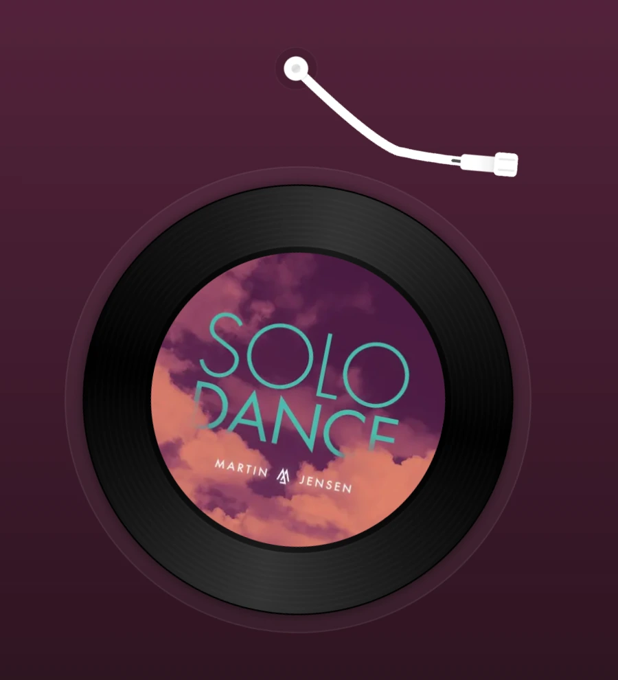
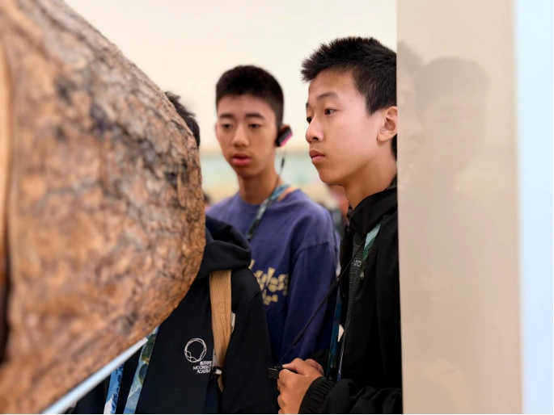
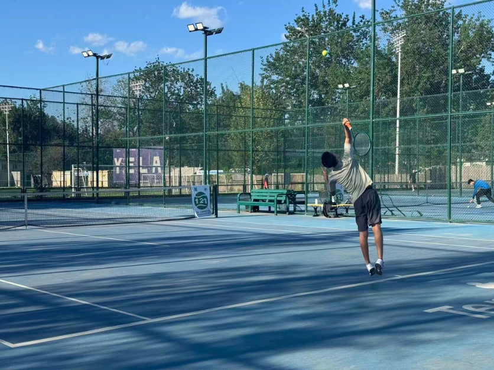
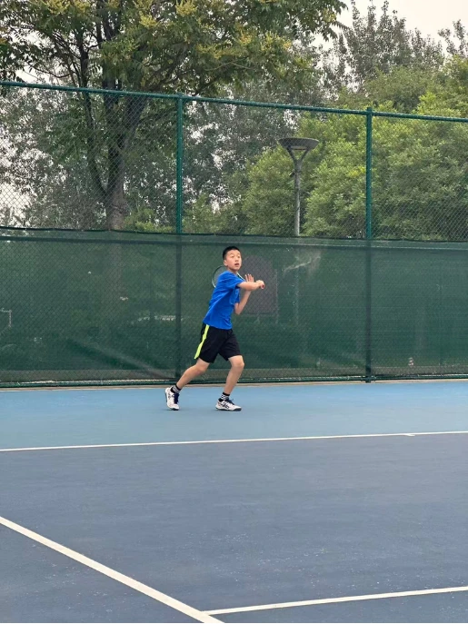
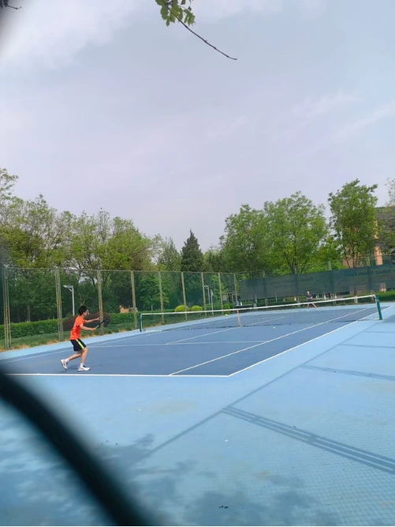
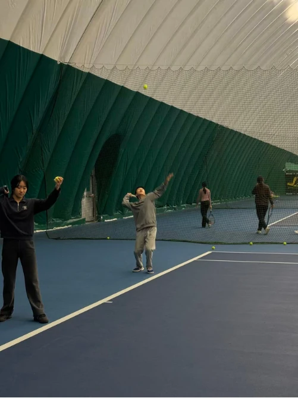
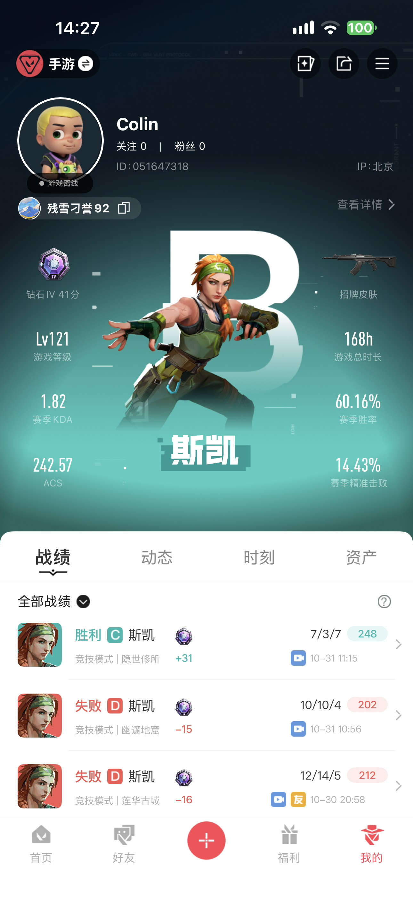

Music

Songs I always come back to.
Explore my listening shelf
Hi, I’m
A high school student at Moonshot Academy, deeply passionate about sports and games.

I enjoy playing tennis and frisbee. Off the court, I like to travel, capture everyday moments with my camera, and get lost in music.
Explore my interests
Songs I always come back to.
Explore my listening shelf
New places, new perspectives.
Explore my European journey
Places that made me stop and look.
Explore my photographs
Selected project
More than a sport.
A way to grow.

01 / Serve
02 / Practice
03 / Match
04 / TrainingScroll or drag either way — photos loop in and out.Swipe either way — photos loop in and out.
Tennis keeps me active and helps me build discipline, stay focused, and learn to handle pressure.
I practice serving, forehand, backhand, footwork, and match strategy — working toward greater consistency each time.
Practice has made me more confident on court, improved my decision-making, and taught me to value steady progress.
Small progress,
every day, adds up.
01 / VALORANT Mobile
If you love VALORANT Mobile, let’s team up, practice, and climb together. I’m not the strongest player, but I won’t put pressure on my teammates.
I’ve been playing for less than a year and I’m currently Diamond IV. I’m usually free on Saturdays and Sundays, and happy to share tips so we can learn and improve together.
Contact me
02 / Aim practice
Hit green targets, then review your accuracy and time.
Move to aim · Click to shoot